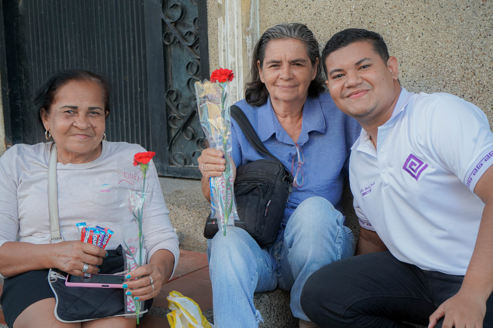
Comunidad de La Paz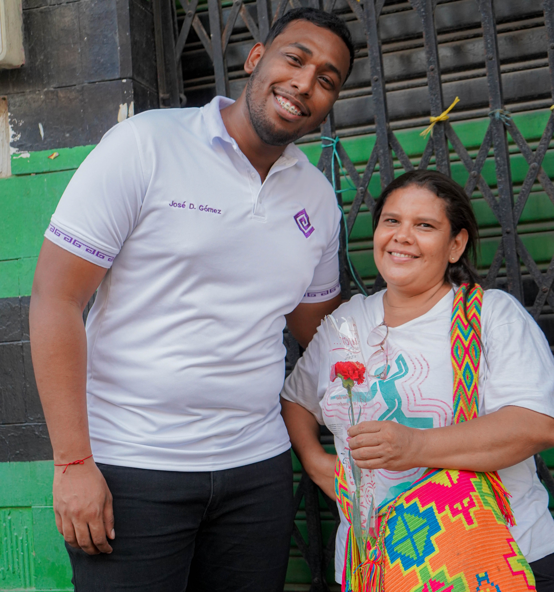
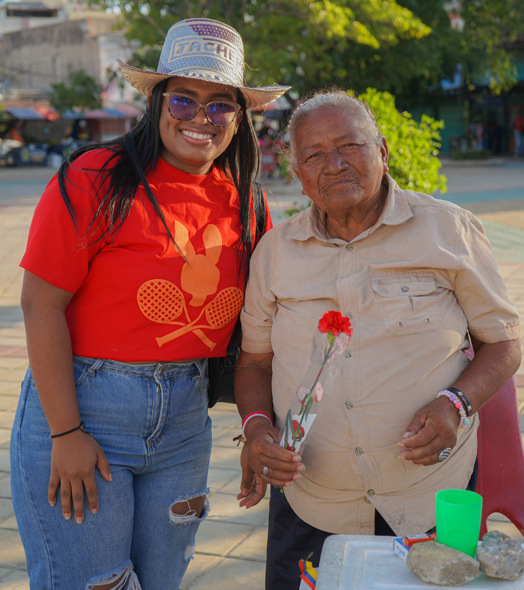
Meta Cumplida
En muchas comunidades de Maicao, la labor diaria y el rol fundamental de la mujer a menudo pasan desapercibidos en medio de las dificultades económicas y sociales. Existe una necesidad vital de fortalecer el tejido social a través de gestos que dignifiquen su presencia y reconozcan su valentía como pilares de la familia y la sociedad guajira. La falta de espacios de reconocimiento directo puede debilitar el sentido de pertenencia y valoración propia en entornos vulnerables.
Con el objetivo de fortalecer los lazos de respeto y cercanía, la Fundación Jachepa ejecutó una intervención de impacto emocional y comunitario. Durante esta jornada especial, nuestros voluntarios recorrieron diversos sectores para entregar flores y mensajes de gratitud a las mujeres en su día. Esta acción no fue solo un regalo, sino un símbolo de solidaridad y un ejercicio de construcción colectiva, reafirmando que el liderazgo juvenil está comprometido con la dignificación de todos los miembros de nuestra comunidad.
"Honrar la labor de la mujer es fortalecer los pilares de nuestra sociedad; un pequeño gesto que construye grandes lazos de respeto."
— Equipo Jachepa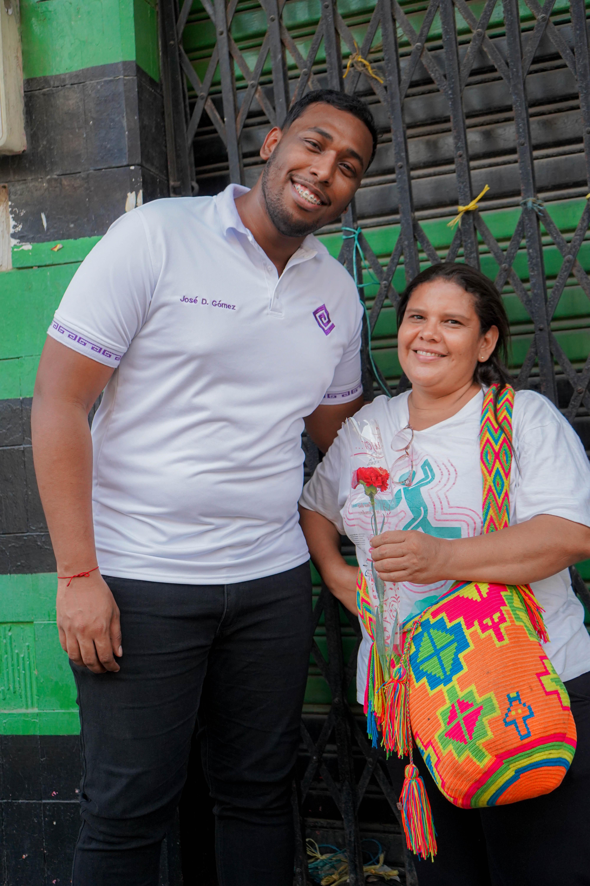
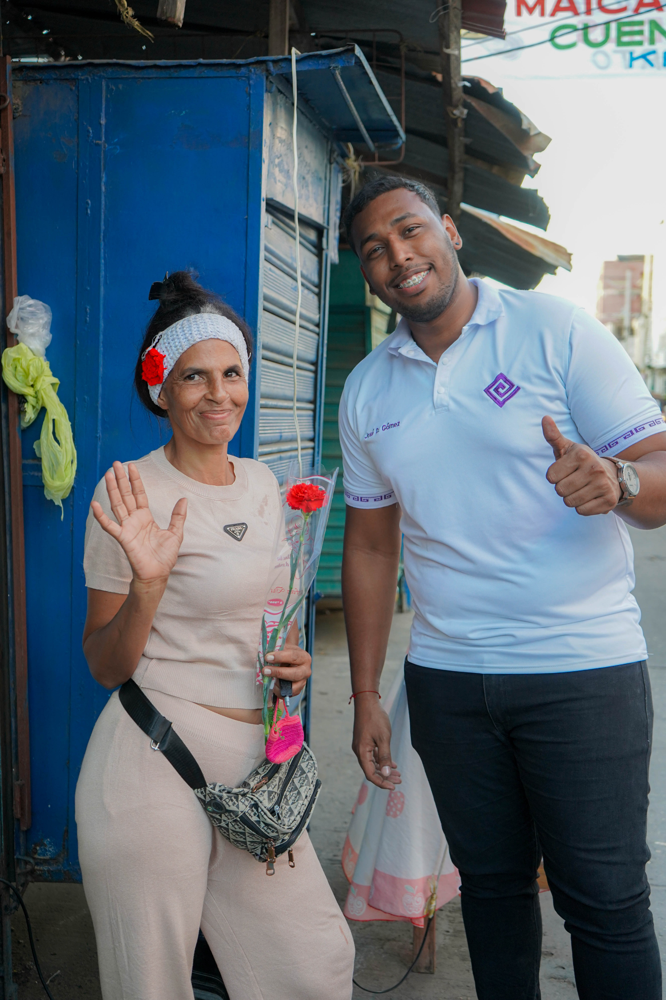
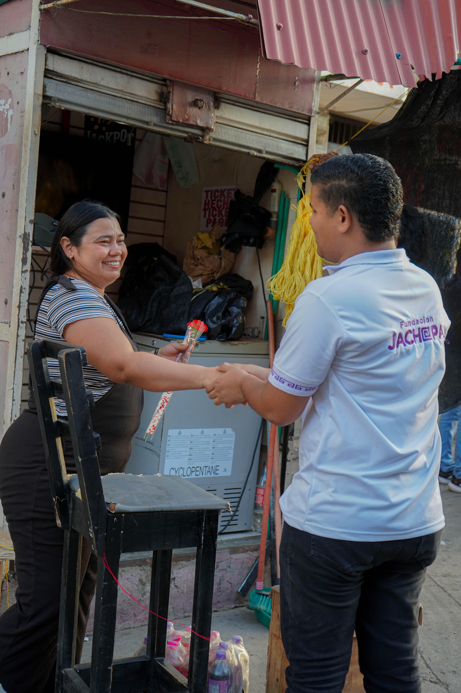
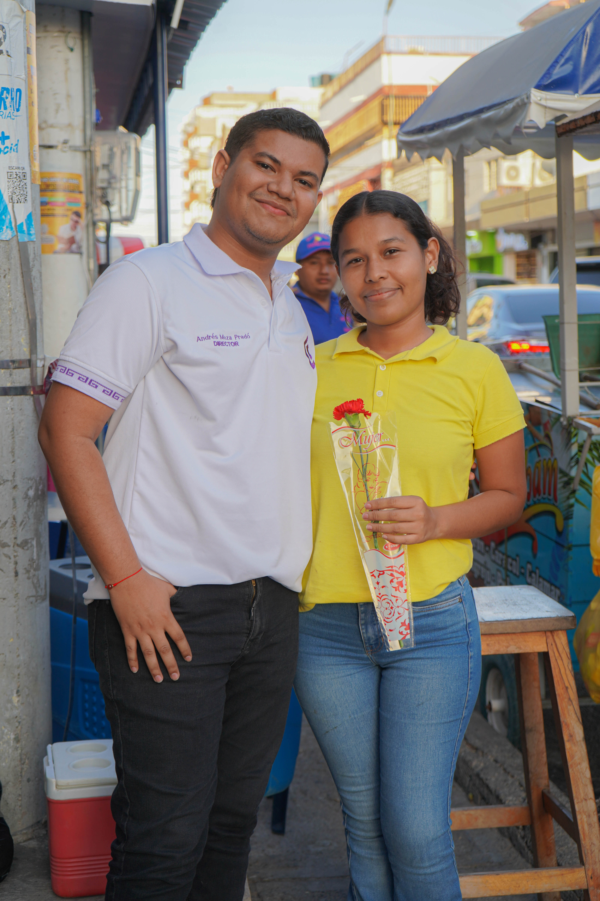
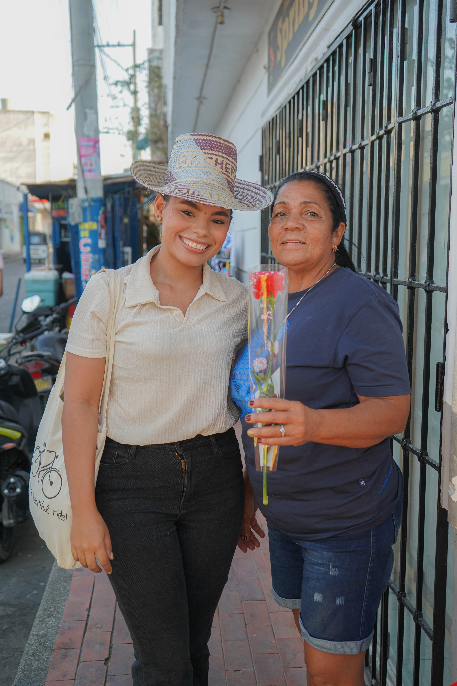
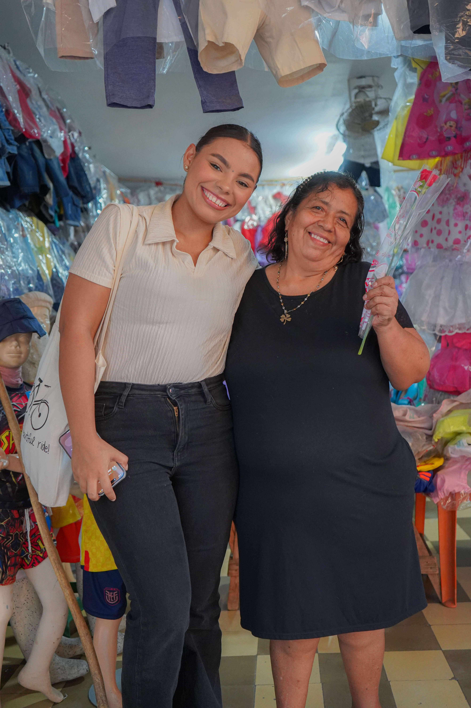
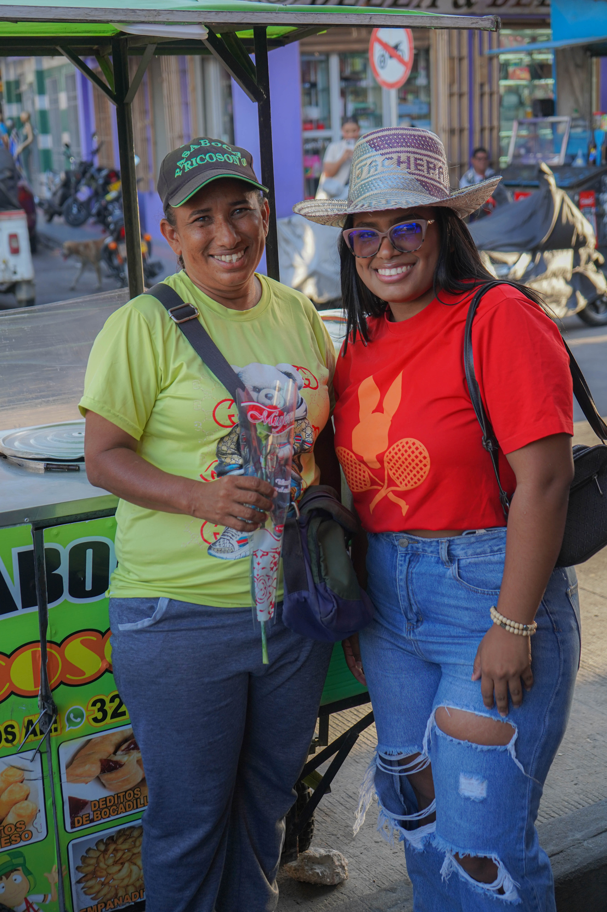
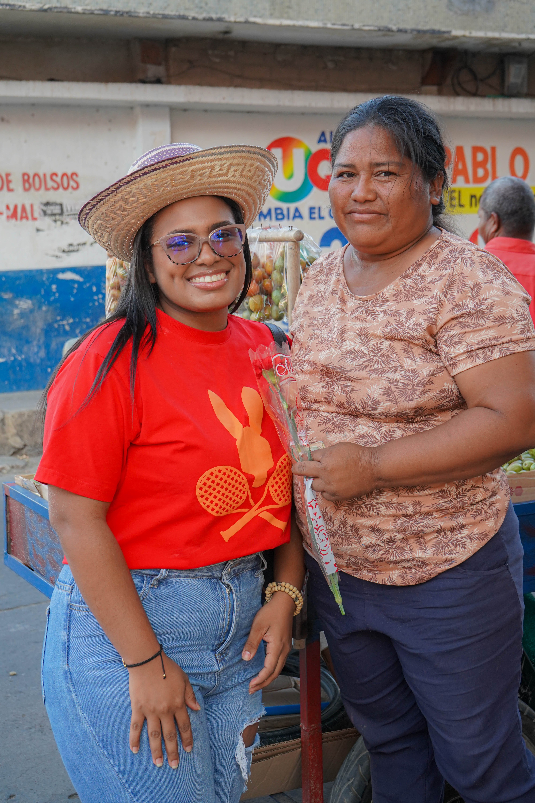
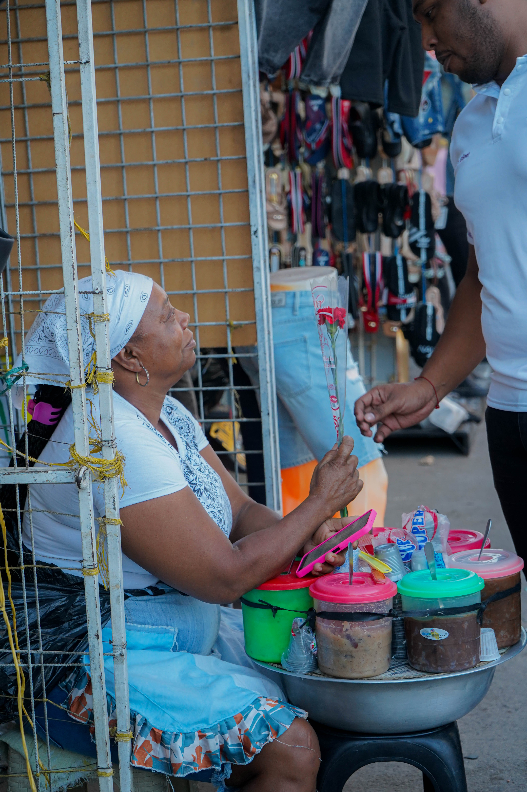